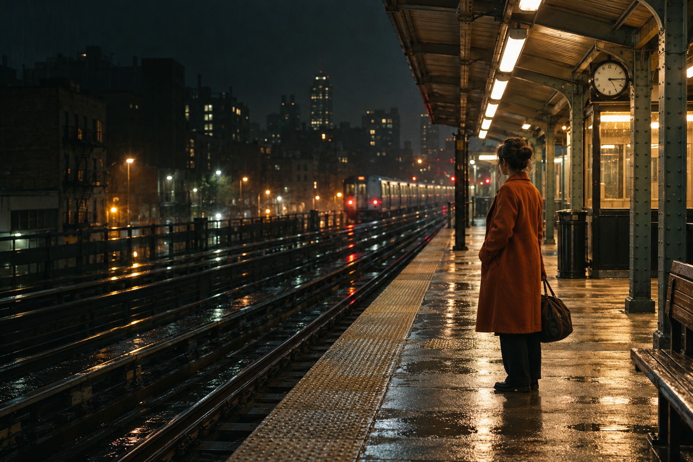

THE FRIDAY PICK
MIRA SEN / 2026 / 104 MIN
THE CITY
AT 2:17
A missed connection. An overnight city. Two strangers with nowhere urgent to be.
FRI 06 NOV20:3035MM · ENGLISH SUBTITLES
INDEPENDENT FILMS.
SHARED IN THE DARK.
For the film you came to see.
And the one you didn’t know
you needed.

Some detours are worth missing
the last train for.
MIRA SEN / 2026 / 104 MIN
A missed connection. An overnight city. Two strangers with nowhere urgent to be.
01 / ON THE SCREEN
Three films. Six ways in.
Pick a time. Keep it on your list.
3 films · 6 screenings
All times belong to this fictional programme.No screenings match that day and format. There’s more on the full programme.
Choose a screening time to read more and save it. Your shortlist stays in this browser.
02 / FROM THE BOOTH
A NOTE ONThat half-hour when the film hasn’t quite let you go. You take the long way. You argue about the ending. A perfectly ordinary street looks a little different.
That’s the thread through this opening programme: people getting lost, getting it wrong, finding something anyway. One city after midnight. One gloriously imperfect band. One summer that refuses to end.
Three films that leave the door open.
— The Side A programme
BEFORE THE LIGHTS COME UP
Side A is a fictional place, made to explore a different kind of web design. The films, filmmakers and screenings are invented; the film artwork is generated for this project.
You can explore the programme and save screenings on this device. There are no tickets to buy, messages to send or accounts to make.
Made with Humaniser v3 (opens in a new tab)